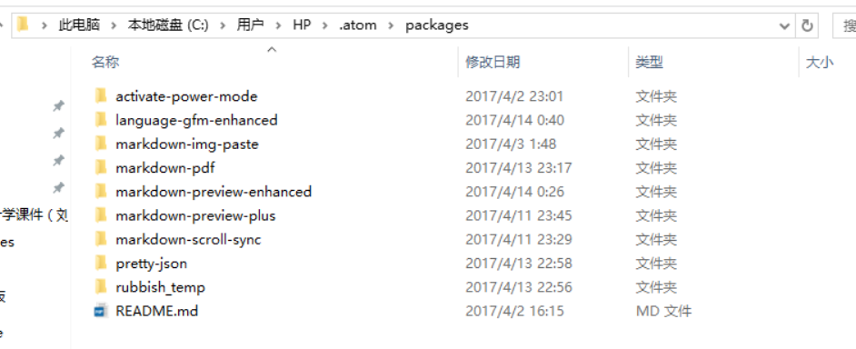
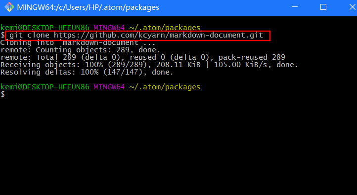
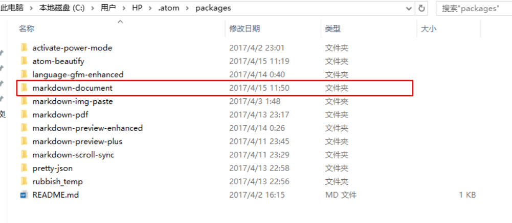
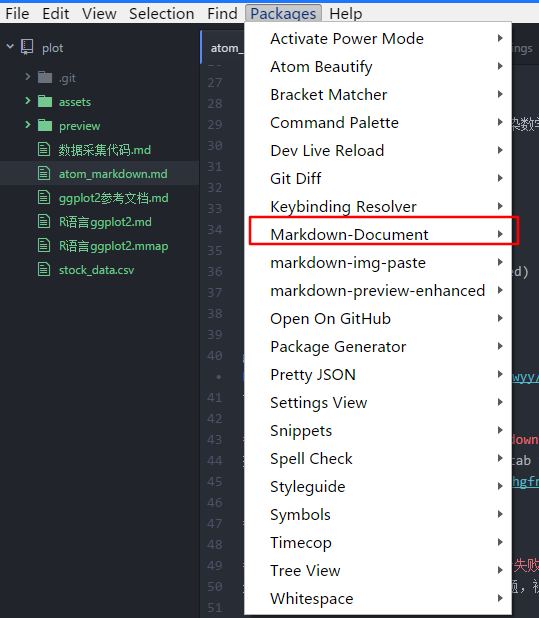

atom markdown 用法及相关插件使用介绍
atom-markdown 插件
插件名称 markdown-img-paste 粘贴图片
描述：markdown-img-paste 可直接截图，使用crtl + shift + v 粘贴图片到文档，
一个可以快速粘贴剪贴板里的照片到markdown的插件，并且可以设置使用七牛存储照片
其使用了七牛做为图片库；
插件github地址：Markdown-img-paste
简要说明：使用此插件需要申请七牛帐号，并获取七牛的开发密钥；
插件名称 activate-power-mode 炫酷插件
描述：让自己的字体动起来，炫酷插件；
github地址：activate-power-mode

markdown-preview-enhanced markdown增强插件
描述： markdown 写作必备插件 支持特性
- 编辑与预览滑动同步
- 导入外部文件
- Code Chunks (beta)
- pandoc
- prince
- ebook
- Presentation Writer
- 支持扩展
- 数学编辑支持
- 你可以选择 MathJax 或者 KaTeX 来渲染数学表达式
- 导出 PDF, PNG, and JPEG 文件
- 导出 HTML （完美支持移动端设备）
- 编译成 Markdown 文件
- 自定义 Markdown Preview 样式（css）
- TOC 自动生成 (beta)
- Flowchart / Sequence 等各种图
- Task List 任务列表 (Github Flavored)
- 图片助手
- Footnotes
- Front Matter github地址Markdown Preview Enhanced 使用安装:参考github介绍及使用
markdown-scroll-sync 预览与markdown同步
描述：Auto-scroll markdown-preview tab to match markdown source.

atom -插件安装
默认情况下，中国使用atom安装，总会失败，各种失败，各种错误；
这个就不要debug，默认都是服务器连接问题，被墙了，安装失败；
解决办法是：手动安装 直接下载github原始文件到本地，本体npm安装； 具体办法： 1.下载 插件到本地，存放到.../.atom/packages 目录 2.使用cmd 命令 cd .../.atom/packages 目录下，执行npm install 插件文件夹名称 示范：安装 markdown-document
- 步骤1 进入到 .atom/packages目录： 
- 步骤2：右键 git bash here ，将 markdown-document文件下载到本地 .atom/packages 目录 
- 下载文件如图所示： 
- cmd 命令到 .atom/packages目录：

- OK,安装完毕，重启Atom软件，good； 
markdown 站外插件 markdown 生成目录树
markdown 生成目录树

github地址i5ting_toc
- Install npm install -g i5ting_toc
- Usage
➜ tocmd.npm git:(master) ✗ i5ting_toc -h
Usage: i5ting_toc a node npm wrapper of i5ting_ztree_toc https://github.com/i5ting/i5ting_ztree_toc
Options:
-h, --help output usage information
-V, --version output the version number
-f, --file [filename] default is README.md
-o, --open open in browser
-v, --verbose
这个版本的命令比较简单，只有一个-f参数，如果没有填写，默认使用README.md，常见用法
i5ting_toc -f sample.md -o